第二节 | 机车驾驶
〔作者〕苏秋1972 〔版本〕2026年7月第二版
〔作者〕苏秋1972 〔版本〕2026年7月第二版
在上一节教程中，你已经了解了如何搭建铁轨、建设铁路；本节教程中，我们将了解如何驾驶和运用各种机车。IR拥有根据现实机车简化而来的真实的机车驾驶系统（这是IR的一大特色），我们将在本节中重点讲解这一内容。
IR默认使用小键盘上的按键控制机车。如果你的电脑没有小键盘，需要先在MC设置中修改对应的键位 或者单独买个小键盘 才能继续。（IR 1.10.0新增的互动驾驶放在后面专门介绍）
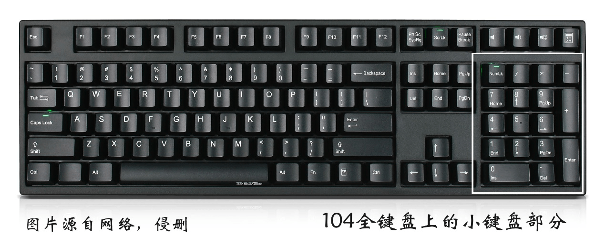
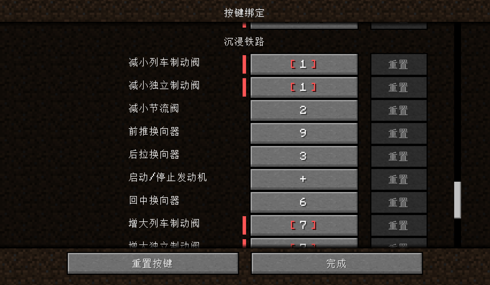
节流阀、独立制动、列车制动和启动/停止发动机等选项是机车控制的系统的核心部分，一定要为它们设置键位。换向器也是机车控制系统的核心部分，但它可以用节流阀带着控制，可以不单独设置按键。失能开关、鸣警铃、鸣笛、配置菜单等选项，如果你的键位比较紧张，可以暂时放弃。（当然，有了它们游戏体验会更完整）
在沉浸铁路里，车辆被分为机车（牵引其他车厢的火车头）、客车和货车三种，机车提供动力，而其他车厢则负责运载旅客、货物等功能。沉浸铁路自带了很多机车，包括蒸汽机车、内燃机车、手摇车等，你可以在创造模式背包中找到这些机车。你可以通过将鼠标光标放在机车上来查看对应机车的详细信息，包括轨距、最大时速等。
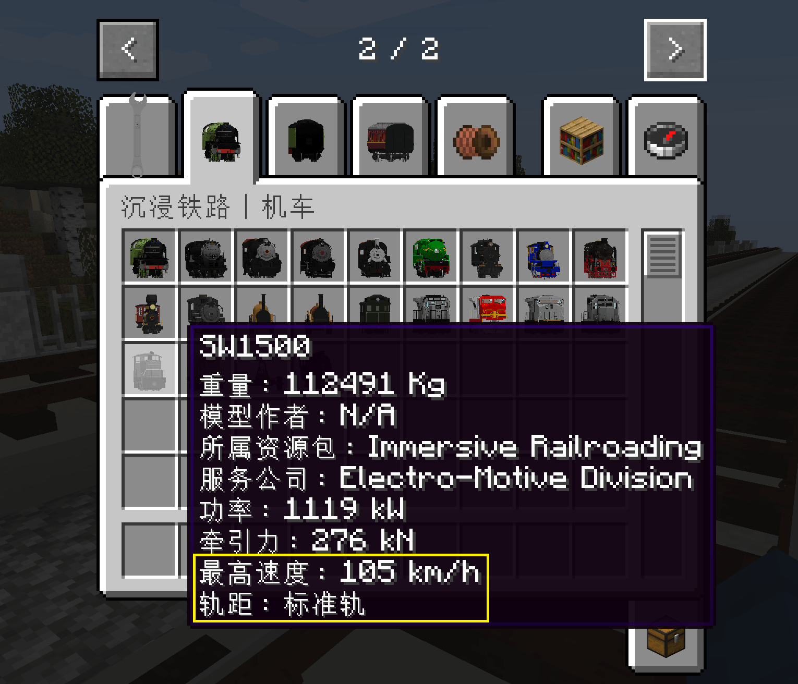
手持对应机车右键铁轨可以放置机车，按住SHIFT键后左键机车可以把机车收回。你应当根据铁轨的轨距放置对应类型的机车，否则车辆模型会按轨距进行缩放，导致车辆过大或过小。（本教程将统一使用标准轨机车）
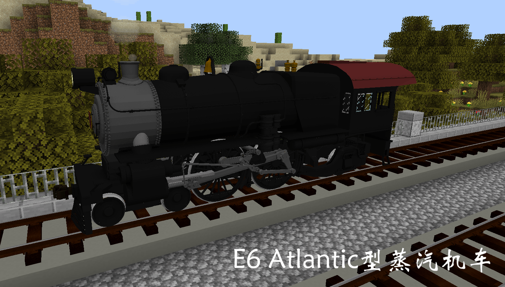
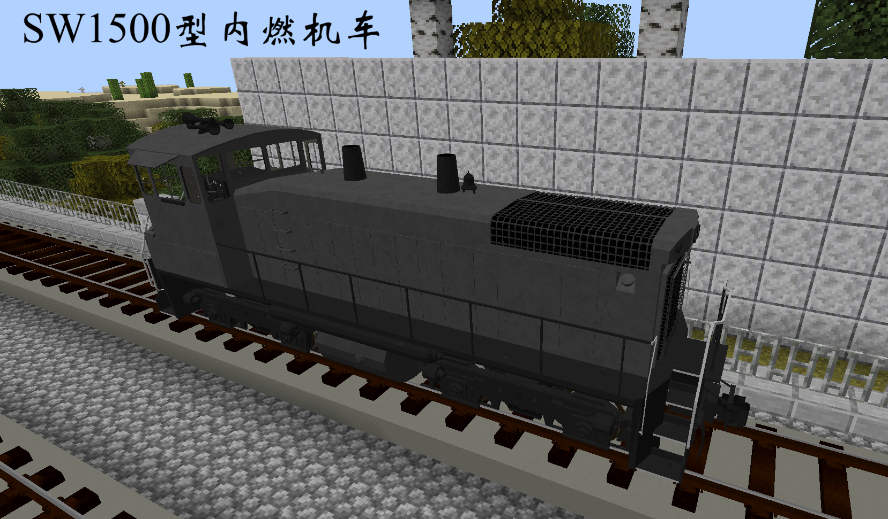
右键机车可以上车，按SHIFT键可以下车。沉浸铁路的车辆是可以攀爬的，你也可以站在车顶随车辆一起移动（虽然会有比较明显的颠簸）。上车后，你可以在车辆内自由走动、操作车内的一些部件，同时能够看到机车的控制界面。不同种机车的控制界面、启动方式等都存在着一些不同，我们接下来将依次进行介绍。
登上蒸汽机车后，你会在屏幕的左下角看见一块控制面板，它的上部显示着机车的时速，左侧显示着水量、锅炉温度等信息，右侧则显示着驾驶系统、制动系统的状态。
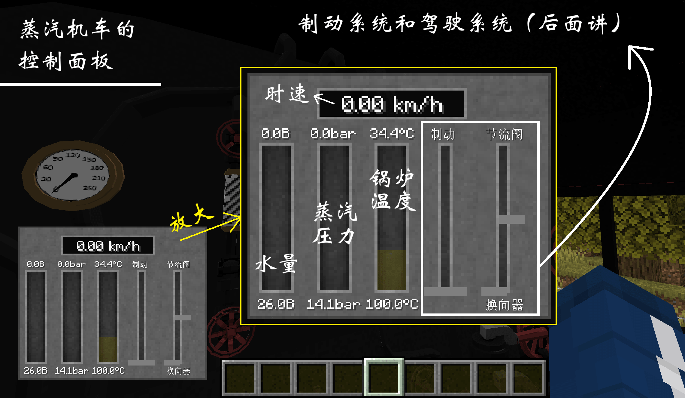
左侧的三个状态条，从左到右分别是为水量、蒸汽压力、锅炉温度。状态条的上下方各有一个数字，下方的数字代表能达到的最大值（锅炉温度除外，锅炉最高温度可以比100℃高一些，下文讲），上方的数字代表当前的状态。例如水量条下面的数字（26.0B）代表这辆车可以装26桶水，上面的数字（12.0B）代表现在已经装了12桶水。
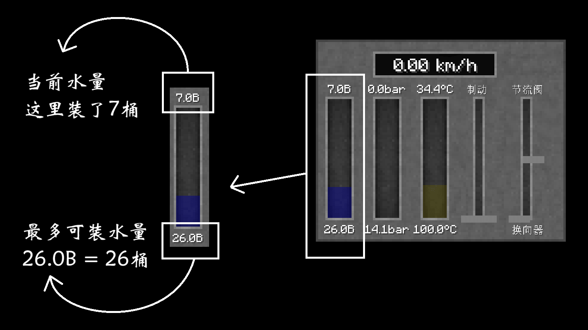
水量、锅炉温度和蒸汽压力是蒸汽机车的三个基本参数，蒸汽机车通过燃烧燃料加热水产生蒸汽压力来运行，机车运行时会消耗蒸汽压力（当然也会消耗燃料和水）。因此，为了启动机车，你需要为机车加入燃料和水来产生蒸汽压力。在车上对任意处右键（或在车下SHIFT+右键机车）可以打开蒸汽机车的GUI界面，你可以在此加水、加燃料，对应的修改会在左下角的状态条里实时显示。按ESC键可以退出该界面。
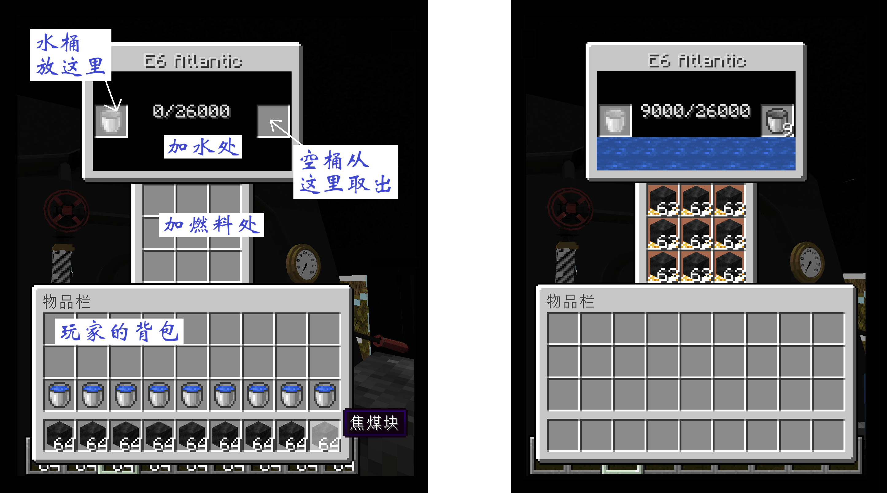
在原版MC熔炉中能作为燃料的物品（如木制工具、煤炭、木板、岩浆桶等等）都可以做蒸汽机车的燃料，不过推荐你使用煤炭或煤炭块作为燃料，因为木板等的燃烧时间比较短。如果你安装了沉浸工程MOD，还可以使用沉浸工程里的“焦煤（块）”作为燃料，它的燃烧时间是原版煤炭（块）的两倍。
启动蒸汽机车的第一种方式是常规启动，它的速度比较慢，但操作比较简单，而且不会失败。你需要先往机车内加水，加到50%以上（刚开始水不要加太多，水越多蒸汽压力产生越慢），然后再加入燃料。随着燃料的燃烧，锅炉温度会不断升高，达到100℃后蒸汽压力也会开始增长，等蒸汽压力较大时再给机车装上足够的水和燃料，此时就可以驾驶机车了。
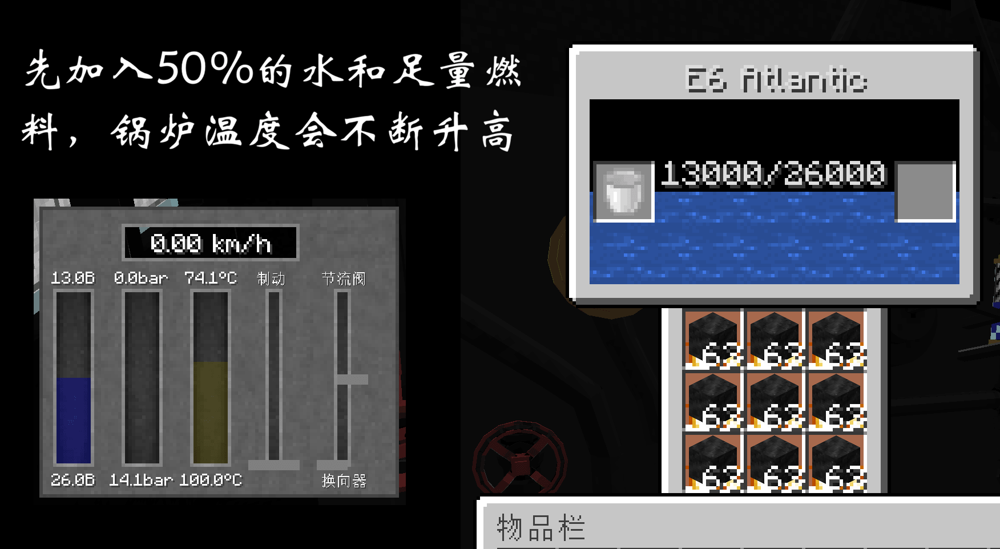
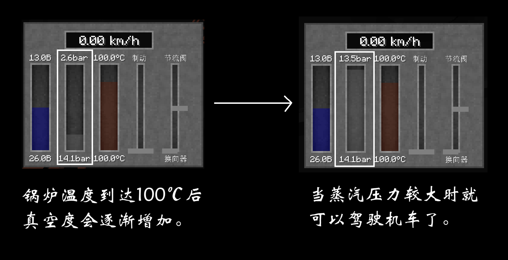
其实只要有蒸汽压力就能驾驶机车，因此不一定要把蒸汽压力烧满，到了一定程度即可；但是机车行驶会消耗蒸汽压力，若机车的燃料加的不够多（没有加满所有格子等）可能会导致产生的蒸汽压力少于消耗的蒸汽压力，使机车的蒸汽压力逐渐下降，蒸汽压力清空后就无法驾驶机车了。蒸汽压力满了之后，机车会自动打开泄压阀放出多余的蒸汽，蒸汽压力不再上涨。
蒸汽机车的第二种启动方法是快速启动，它的启动速度相当快，但是操作要更有技巧一些。你需要先往机车内加入少量水（2~3桶），再加入足量的燃料。水越少锅炉加热越快，因此锅炉温度会比之前快得多地上涨到100℃。锅炉温度达到100℃时，蒸汽压力会开始急速增长，此时必须在蒸汽压力涨到一定程度后、涨满之前迅速地为机车加水到25%以上，再慢慢地为机车加满水，然后就可以驾驶机车了。如果蒸汽压力涨满时水量在25%以下，水就会被快速消耗完，然后蒸汽压力和锅炉温度等都会复原，一切就都得从头开始。
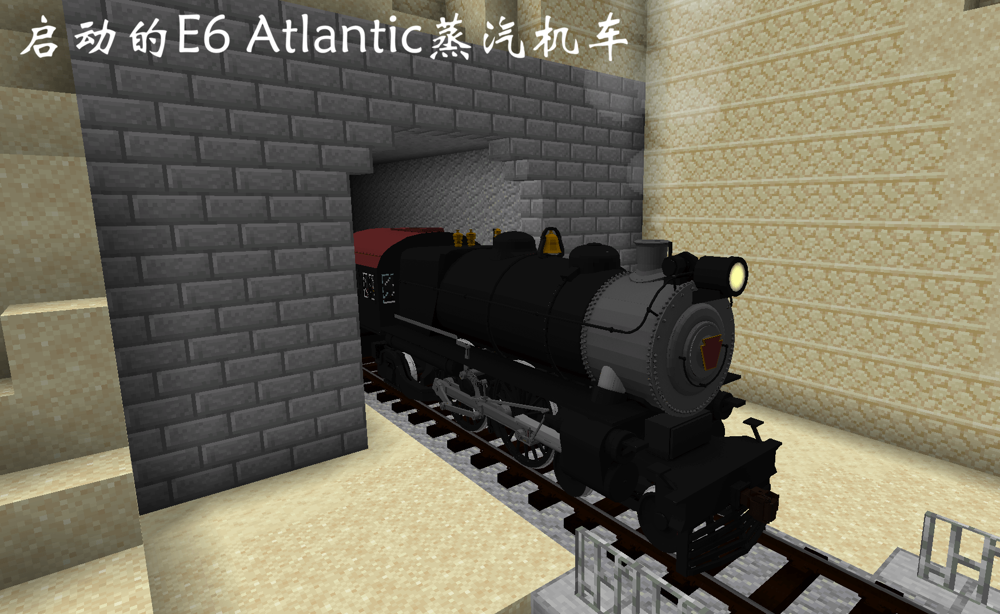
常规方式启动机车往往需要好几分钟，而快速启动往往能在一分钟内启动机车。不过并不是所有的车都支持快速启动，因为有的车的锅炉很大（例如自带的“Big Boy”大男孩蒸汽机车，整整可以装95桶水），很难在蒸汽压力急速上涨的短时间内将水加到25%以上，这种情况下快速启动的失败率相当高。在快速启动机车时，如果你没能在蒸汽压力涨满之前把水加到25%以上，然后在水被快速消耗时一直“拼手速”地不断为机车加水，导致水量一直低于25%却又不能降到0，就会使锅炉温度在100℃基础上继续升高，最后导致机车爆炸（会破坏方块，威力比原版的TNT大不少）。相比蒸汽机车，还是内燃机车更安全一些啊~
（也不必太担心蒸汽机车爆炸，快速启动时只要在蒸汽压力涨满前把水加到25%以上就没事了；如果蒸汽压力涨满时水仍然小于25%，就不要再去加水了，让水自己烧光就行，水烧光所需的时间远远小于锅炉烧到机车爆炸所需的时间。）笔者玩了几年IR，也只炸过一次蒸汽机车
当蒸汽机车的燃料或水耗尽时，如果机车还有蒸汽压力，蒸汽压力会自己慢慢减少，此时你仍然能驾驶一小段时间的机车（驾驶机车会加快蒸汽压力的消耗）。
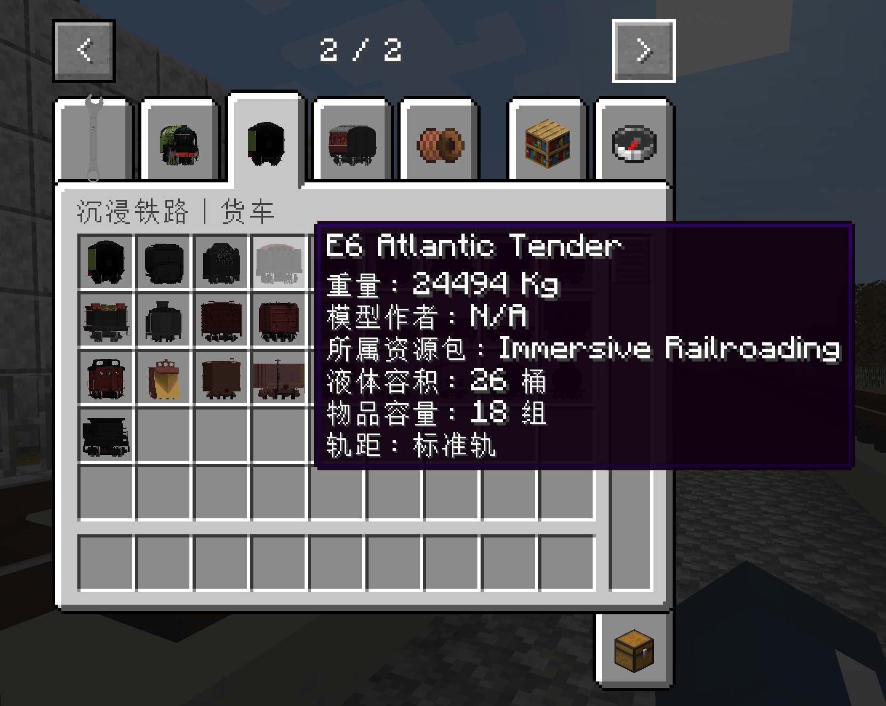
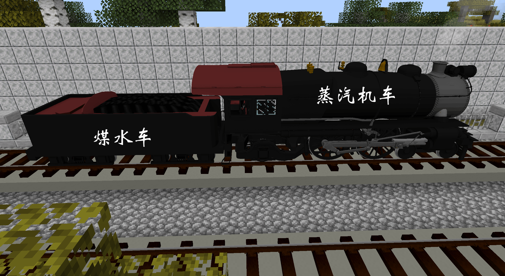
蒸汽机车可以在机车后挂载一辆煤水车专门负责给机车提供水和燃料（虽然IR里的蒸汽机车自身能携带的水和燃料就足够让它跑很久了），煤水车可以在创造模式背包中的“沉浸铁路 | 货车”选项卡中找到，不同的机车有不同的煤水车，但不同车的煤水车是可以通用的。
煤水车可以直接放置，也可以手持煤水车、右键机车后部的轨道放置，这样煤水车放置后会自动连上机车（连接上时会发出碰撞声）；如果煤水车放置后没有连上机车，则可以驾驶机车倒车“撞上”煤水车，听到碰撞声即意味着连接成功。IR这里有一点点bug，少部分情况下驾驶机车倒车撞上煤水车可能会直接把煤水车当作空气、穿煤水车而过，可以多试试看重新放置煤水车和机车。车辆连接是下一节的内容，要具体研究如何编组车辆等可见下一节。
登上煤水车后右键任意处（或在煤水车下SHIFT+右键煤水车）即可打开煤水车的GUI界面，煤水车的GUI界面和蒸汽机车差不多，也是上面加水下面加燃料。为煤水车添加水和燃料后，若煤水车连接到了机车，则煤水车会自动将自己的水和燃料转移到机车上，直到将机车的水和燃料槽全部填满为止。
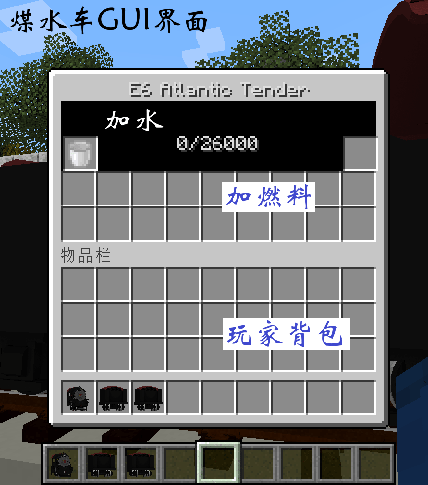
煤水车和蒸汽机车之间如果连有其他车辆，煤水车将不能给机车提供水和燃料；但如果煤水车和机车之间连着的是另外一辆煤水车，则仍然可以提供水和燃料。按照这个思路可以一直套娃，一辆机车连着几十辆煤水车，无限供应燃料和水~
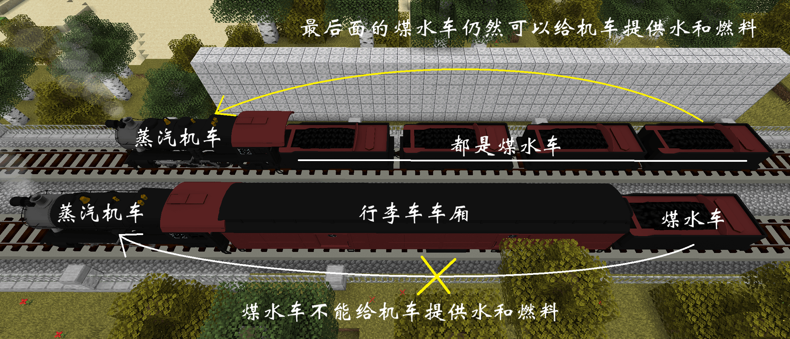
注意：虽然煤水车可以为蒸汽机车提供燃料和水，但煤水车本身的重量会减缓蒸汽机车加速的速度（并且煤水车内的水和燃料越多，煤水车的重量越大），所以煤水车并不是越多越好，一般只加一辆即可。
内燃机车的左下角也有一块控制面板，其中包含了时速、油量、发动机温度等信息。在车上对任意处右键（或在车下按下SHIFT后右键机车）也可以打开内燃机车的GUI界面，你可以在此加油。
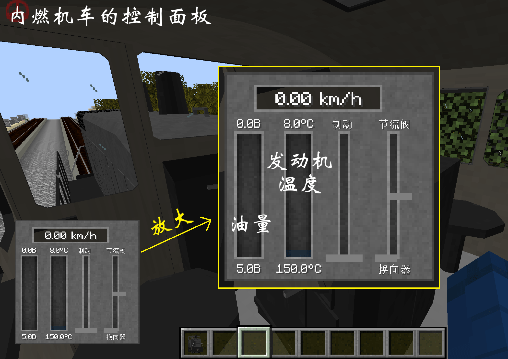
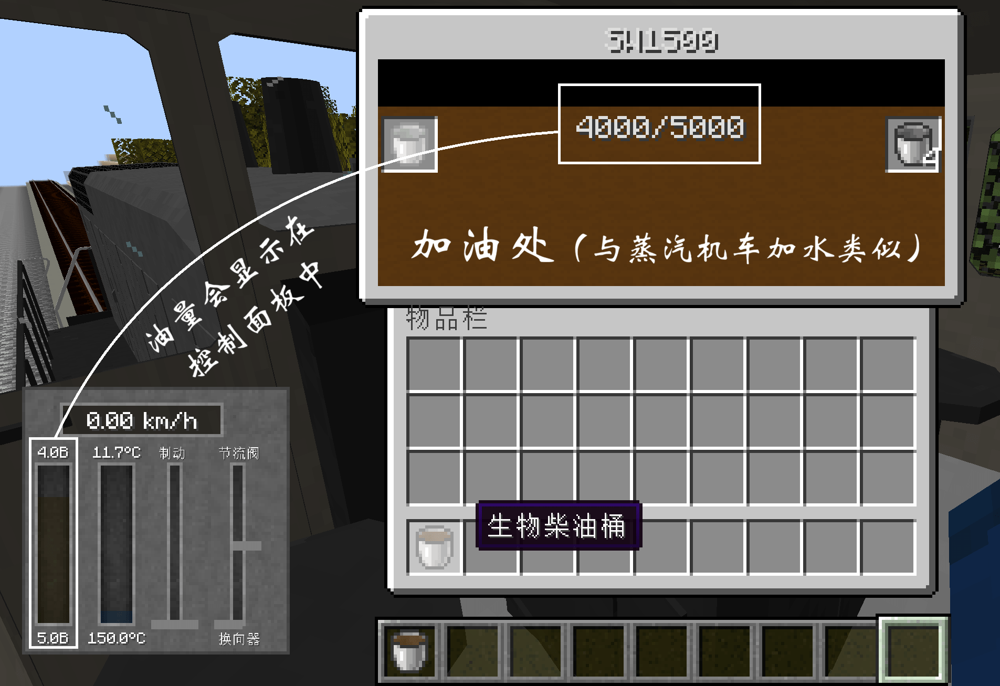
内燃机车通过消耗柴油等液体燃料运行，这些液体燃料需要沉浸工程Mod（或沉浸工程附属的沉浸原油Mod）提供，因此建议你在安装沉浸铁路的同时也安装一个沉浸工程，否则将不能在不修改配置文件的前提下启动和驾驶内燃机车，也不能在生存模式下制造液体燃料。是的，IR能在生存模式下造车和游玩！不过需要沉浸工程
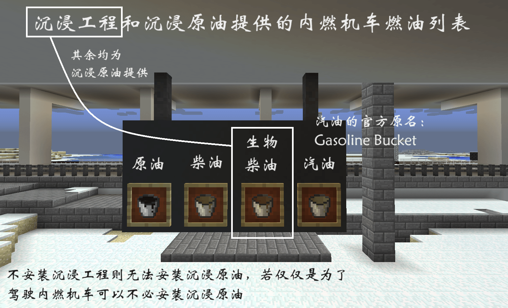
为内燃机车加油后，你可以按下自己前面设置的“启动/停止发动机”按键来启动机车，此时发动机的温度将会不断升高。等发动机温度升高到75℃时，内燃机车就启动成功了——你可以驾驶机车了。内燃机车消耗燃油的速度比较慢，油的多少也不会影响发动机的启动速度，因此加油多少并没有限制，你甚至可以只加一桶油（当然，全部加满也是没关系的）。
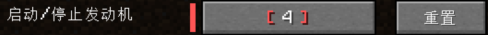
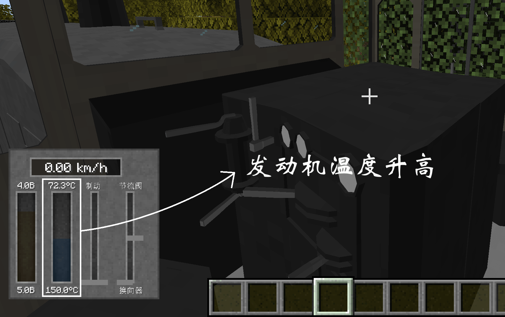
加油、启动发动机后，发动机的温度会自己上涨，不过上涨的速度非常缓慢。如果你想要在短时间内启动发动机，可以将节流阀（铁路机车的油门）拉起来，这样会极大地提升发动机的升温速度。不过，这样启动机车后，机车的节流阀是开着的，因此机车会自动向前行驶；如果你只想启动机车而并不想让车开走，可以操作制动系统让机车停下来。关于机车的驾驶系统和制动系统，我们马上就要谈到。
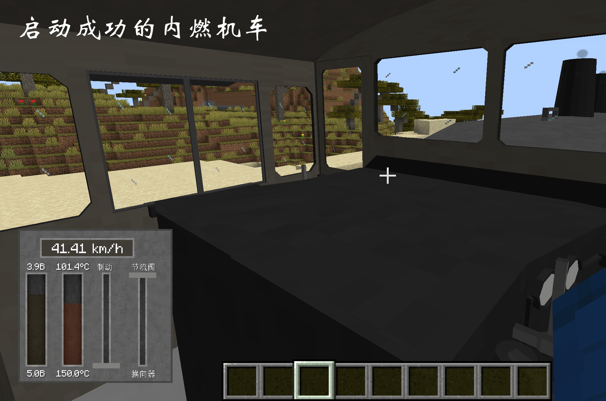
在机车启动后，就可以驾驶机车了。IR的机车驾驶可以被分为两部分，一部分负责开车，即驾驶系统（包括节流阀和换向器）；另一部分则负责刹车，即制动系统（包括空气制动和独立制动）。
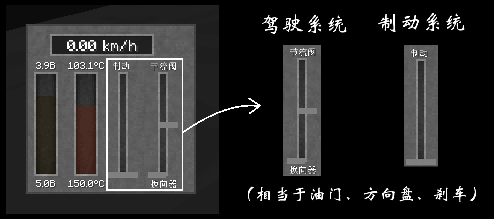
在控制面板上的驾驶系统部分，你可以发现两个滑动按钮，一个默认居于滑动条的中间位置、向右边突出，另一个则默认居于底部、向左边突出。居于中间位置的那个滑动条就是换向器，居于底部的那个滑动条就是节流阀。
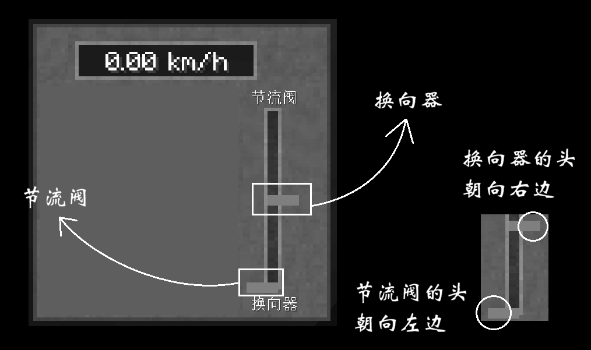
换向器负责控制机车行驶的方向。换向器一共有“前进”、“关闭”和“后退”三个挡位，分别对应着滑动条的顶部、中间、底部三个位置，默认处于“关闭”挡位（换向器按钮位于滑动条的中间）。你可以使用“前推换向器”、“后拉换向器”和“回中换向器”按键改变换向器的位置，切换换向器的挡位以控制机车向不同方向行驶。换向器在IR 1.10.0中显示为Reverser，中文翻译是IR 1.11.0补上的
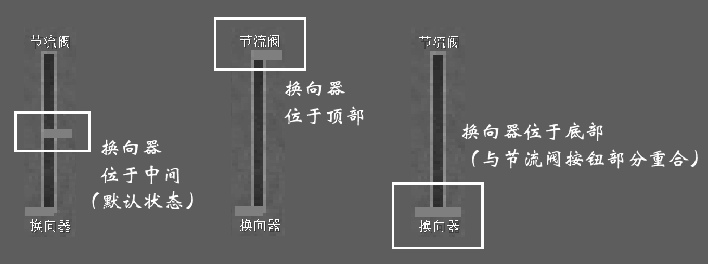
节流阀相当于机车的“油门”，负责控制机车的加速、减速，默认位于滑动条的最底端，代表着关闭状态。你可以通过“增大节流阀”、“减小节流阀”等按键来控制节流阀，使节流阀的滑动按钮上升或下降，增大节流阀会使机车的动力增大、加速更快，否则会使机车的动力减小、加速变慢。按下“节流阀复位”按键则会将节流阀快速归零（即关闭状态），此时机车不会提供动力（停止加速）。
节流阀和换向器必须一起工作，只有节流阀和换向器都开启时机车才会提供动力。
注意：也许是考虑到同时操作节流阀和换向器控制机车过于麻烦，IR作者设计了两种机车驾驶模式——独立模式和联动模式（名字是我取的），可以在IR的设置里切换（config→Immersion Level→Disable Independent Throttle，true是联动模式，false是独立模式），默认启动联动模式。
也许这一点有些不好理解，但操作起来实际上是非常简单的，读者一定要进MC自己试一下，只要实际操作一下就能弄懂了，笔者认为联动模式会比独立模式操作方便一些。
1.蒸汽压力：在驾驶蒸汽机车时，节流阀开得越大，消耗蒸汽压力的速度越快，不过一般如果给机车的所有格子都加满了燃料，机车自身产生蒸汽压力的速度是大致等于或大于节流阀拉满时消耗蒸汽压力的速度的。拉满节流阀时，有的机车的蒸汽压力只会以极低的速度下掉，有的机车甚至还能以一定的速度上升，因此驾驶蒸汽机车时只要保证燃料足够、水位高于25%即可，可以一直拉满节流阀。
2.发动机过热：在驾驶内燃机车时，节流阀开得越大，发动机的温度上升得越快，温度达到140℃后温度条会变红，温度达到150℃后发动机会因为过热而熄火（自动关闭），此时机车会失去动力、节流阀和换向器会失去作用，你也无法立即重启发动机。只有当发动机的温度下降到100℃以下时，你才能用“启动/停止发动机”按键重新启动发动机，所以驾驶内燃机车时一定要注意发动机温度，不要让发动机过热。
只要发动机开着、节流阀开着，发动机温度就会上升，无论是否有使用制动系统或换向器是否开启。
3.发动机如何降温：有两种方法可以降低发动机的温度。第一种是使机车不再加速，也就是将机车的节流阀复位（如果发动机已经过热熄火了，节流阀不复位也行），发动机的温度便会逐渐下降（降到100℃后便会变慢，降到75℃后会停止下降）；第二种方法是直接关闭发动机，关闭后发动机的温度便会逐渐下降（比节流阀复位的方法快不少），不过如果没有注意把控温度，让温度降到了75℃以下，就要重新启动一次机车了。
4.环境影响机车速度：天气会影响机车加速的速度。一般来说，在雨天/雷暴天气中，机车的加速度会明显小于晴天，机车的速度增加得更慢。破坏方块也会降低机车的速度。下雪时，雪会层层覆盖在轨道上，但轨道上的积雪不会影响机车的速度，影响机车速度的是天气（下雪）。
制动系统就是铁路车辆的刹车系统（“控制动能”），可以用于降低机车等的速度。根据现实世界里的铁路车辆制动系统，IR的制动系统分为独立制动和空气制动两种。独立制动直接控制机车本身的刹车系统，也就是直接控制对机车的车轮的刹车；空气制动则控制整列火车的刹车系统，能够对整列火车每个车厢的轮子都进行刹车（在现实世界里这是通过压缩空气实现的）。在不挂车厢时，独立制动和空气制动的刹车效果基本一致；但在加挂车厢时，空气制动明显比独立制动减速的效果好，同时使用独立制动和空气制动的效果和单独使用空气制动基本一致。（下面是MC测试结果）
注意：“空气制动”在IR 1.11.0中被称作“列车制动”（Train Brake），这两个实际上是一样的，为便于读者理解，我们这里仍然沿用“空气制动”的名词。空气制动只是列车制动的一种模式，不过IR目前实际上只有空气制动，也许IR将来的版本中会加入电阻制动等更多制动方式？
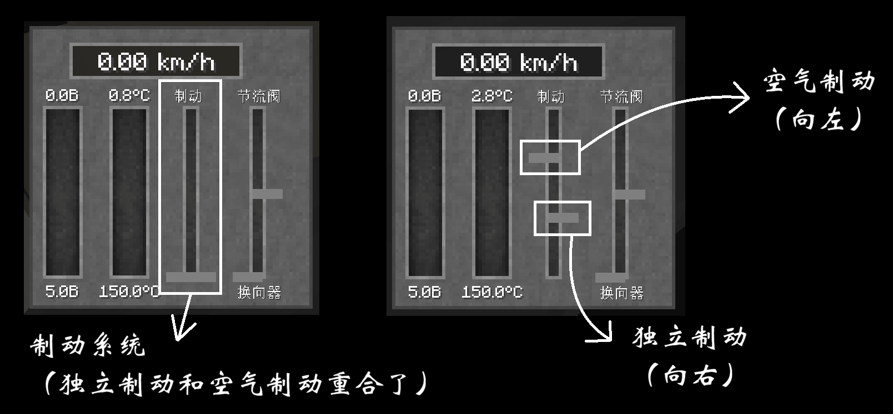
制动系统任何时候都能使用，不受机车是否启动等的影响。在控制面板上的制动系统部分，你可以发现两个居于底部的滑动按钮（它们有一部分重合了，所以看起来像一个按钮），向左边突出的是空气制动，向右突出的是独立制动。制动系统的这两个部分控制起来都比较简单，直接按对应的增加和减少按钮就可以控制刹车力度，拉得越大机车减速得就越快。
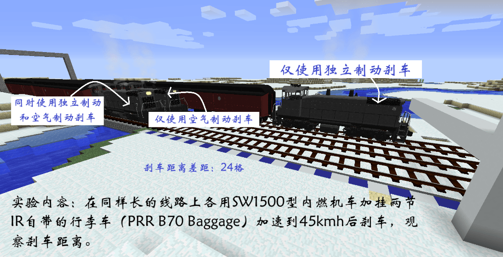
机车加挂的车厢越多，独立制动的效果越差，因此在驾驶连有很多车厢的机车时一般都使用空气制动进行刹车 现实生活中也是这样 ，不过笔者没有在IR里具体地验证这一点。此外，空气制动的按钮在拉起时会出现一个暗色的按钮比白色按钮慢一些拉起（见下图），这是“实际上的空气制动”，因为压缩空气传递到各个车厢进行制动需要时间。当空气制动按钮拉起时，“实际的空气制动”按钮会比“空气制动”按钮慢一些拉起，最后拉起到和“空气制动”相同的程度，车厢越多则“实际上的空气制动”拉起越慢。笔者已经实验验证过了，IR做的很真实！
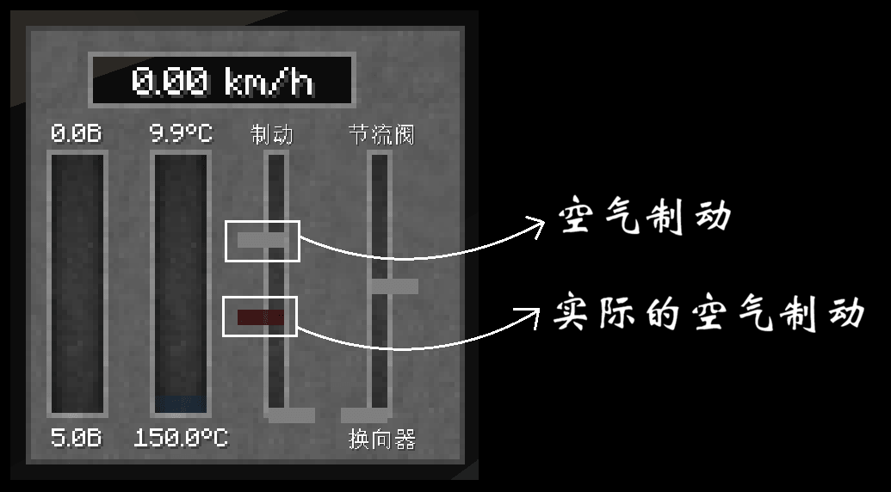
制动系统的其他用途：①防止溜车（车辆自己跑走）。IR模拟了真实的物理系统，车辆经过下坡时速度会增大，经过上坡时速度会减小，因此如果你想要把机车等车辆停在坡道上，就要将制动系统拉起，否则会发生“溜车”事故，车辆会自己滑走。②用于启动内燃机车。上文提到过，在启动内燃机车时，为了加速内燃机车启动，需要将节流阀拉起，但节流阀拉起会导致机车启动成功后自动前进，如果不想让机车启动后自动前进，可以提前把制动系统拉起。
制动小技巧：除了利用制动系统来刹车外，还可以用“倒推节流阀”的方法来制动，即把节流阀、换向器调整至与当前行车方向相反的方向，让机车向相反的方向提供“动力”，这样也可以使机车减速，对一些性能强劲的机车来说效果很好（有时效果甚至比使用制动系统还好）。“倒推节流阀”技巧与制动系统共同使用可以使机车更快停下来，不过会消耗机车的蒸汽压力/燃油。现实中不到最后一步是不能这么做的，因为会损坏机车！
鸣笛：按下鸣笛按键可以拉响机车的汽笛或风笛，持续的时间取决于按住按键的时长，松开按键后即可停止鸣笛。手摇车不能鸣笛，蒸汽机车只有在机车有蒸汽压力时才能鸣笛，内燃机车则只要启动了发动机就能鸣笛（不需要等发动机的温度上升至75℃）。
汽笛或风笛的声音由机车决定，IR自带的所有机车 手摇车不算机车吧？ 都能鸣笛，而一些第三方的机车包（怎么为IR添加第三方追加包在后面讲）可能是没有鸣笛音乐的。有的机车允许鸣笛声循环播放（可以一直鸣笛），有的机车则限制了鸣笛声的最大长度，如果一直按着鸣笛按钮，等一段鸣笛音乐播放完毕后就没有声音了。
鸣警铃：按下鸣警铃按键后机车会开始循环播放“敲钟”的声音（具体声音由机车决定），再次按下鸣警铃按键即可停止。除了手摇车外，其他机车在任何时候都可以鸣警铃，不需要启动机车。
失能开关：决定是否为某辆机车启用“失能保护” 名字还是我取的 功能，默认关闭，按下“失能开关”按钮可以在关闭和开启状态之间切换，当前状态会显示在聊天栏中。在失能开关开启的状态下，如果玩家离开了机车，机车会自动将空气制动拉到最大（独立制动不变）、将节流阀拉到最小（换向器不变），从而迫使机车停下。在失能开关关闭的状态下（默认状态），如果玩家在驾驶机车时不小心按到SHIFT键下了车，无人驾驶的机车将会保持原来的状态继续行驶，此时玩家就要自己想办法追上机车 上演一出《危情时速》，因为IR的机车可以在未加载的区块中自动行驶，会跑得越来越远。如果车太快了追不上，就只能用/tp传送或者破坏铁路线的方法来追车了。
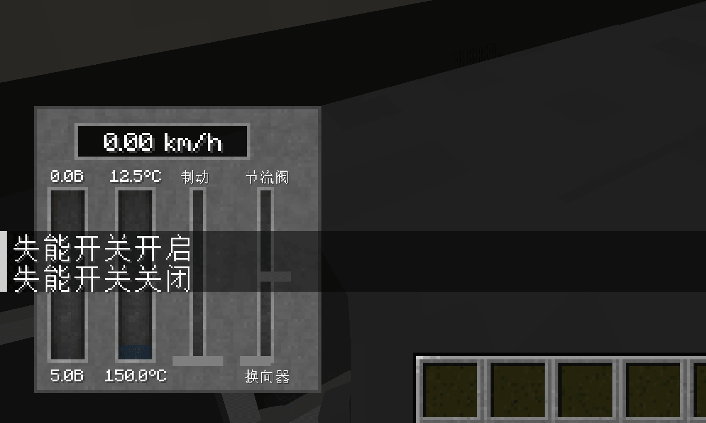
失能开关可以保证机车的安全性（毕竟追车是一件很痛苦的事情），不过如果玩单人存档想要从车上下来拍摄行驶中的列车时，就要关闭失能开关了（当然，一定要记得把机车速度控制在你能追得上的范围内，一般以小于50km/h为宜）。此外，失能开关是针对某辆机车而不是针对所有机车的，在这辆机车上打开了失能开关，并不会使其他机车的失能开关也一起打开。
手摇车是IR里最简陋的一种能提供动力的车，是一种“人力铁路车”，如图所示。
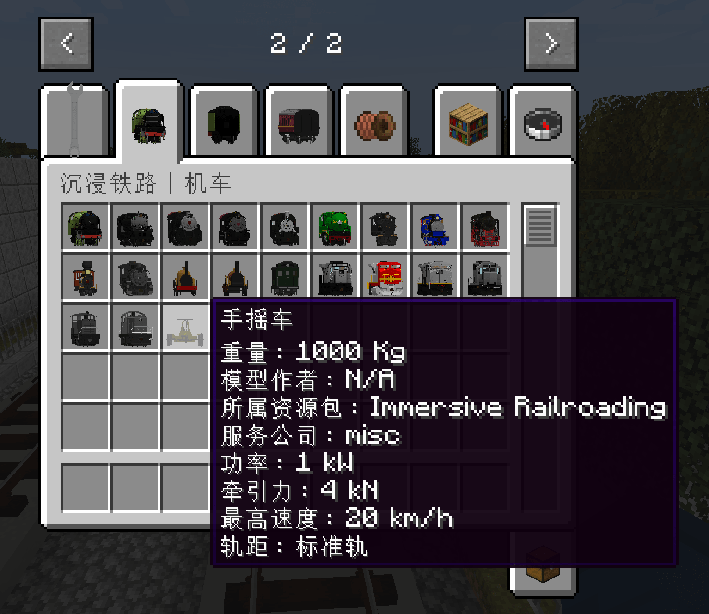
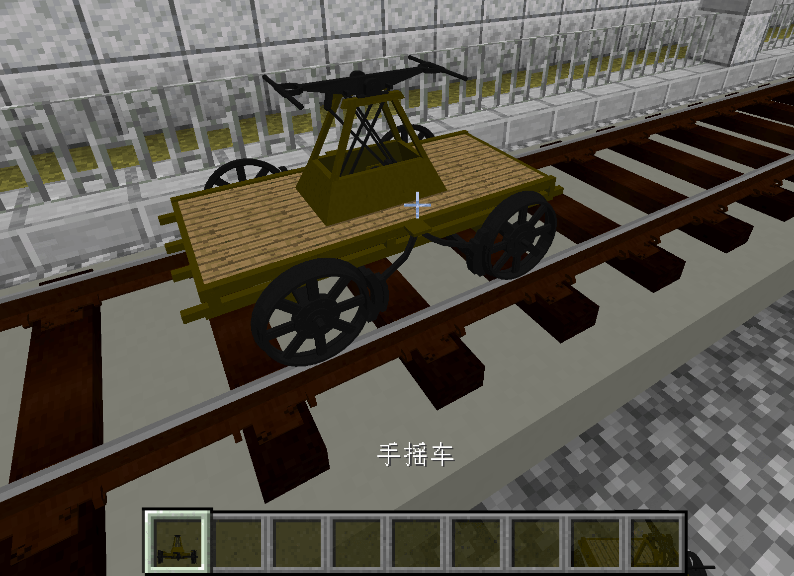
手摇车的最大速度为20km/h，没有其他机车用于添加燃料等的GUI界面 废话 ，控制面板上除了速度外只有独立制动和节流阀的滑块，不支持鸣笛、不支持响警铃，而且牵引力很弱，基本上拉不动除了它自己外的所有IR原版车。手摇车没有换向器，它的节流阀兼具换向器和节流阀的功能，只有前进、关闭和后退三个位置可选，选到哪个挡位即向哪个方向前进；手摇车的动力由玩家提供，不需要加燃料、水等，它通过消耗玩家（生存模式）下的饱食度来运行，玩家一旦下车手摇车便会停止加速。（手摇车支持失能开关，但失能开关并不会发挥作用）
互动驾驶是IR 1.10.0版本新增加的功能，是IR的一大特色，其允许玩家直接操作机车模型上的控制杆、按钮等部件来启动/停止发动机、调整节流阀/换向器和制动系统等，使玩家能够以真实的方式“沉浸式”驾驶机车。而且互动驾驶的拓展性很强，可以控制很多键盘无法控制的功能（如打开/关闭车头灯和雨刷等）。不过并不是所有的机车都能互动驾驶，有的作者在设计机车时没有做互动部件，这种机车就只能用键盘控制了。IR自带的机车中有相当一部分是支持互动驾驶的，接下来我们以SW1500型内燃机车为例介绍互动驾驶。
登上机车后，将十字准心移动到机车上的可互动部件（驾驶台上的按钮、控制杆等）附近，IR会将离准星近的可互动部件的名字显示出来。
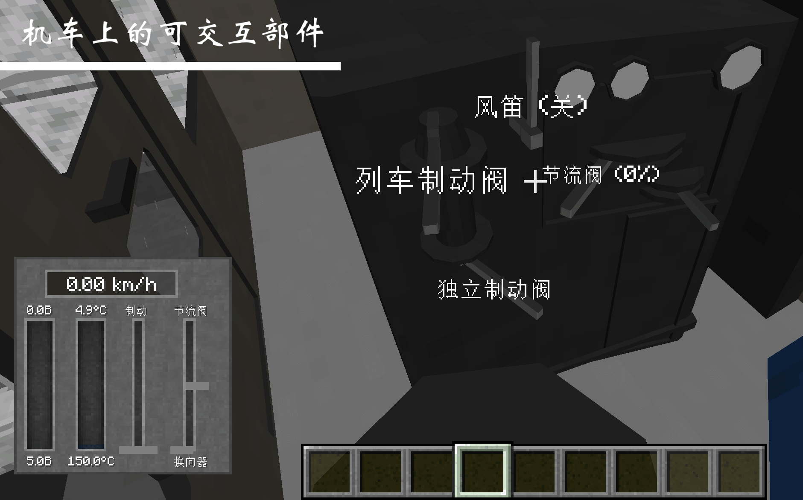
新的IR 1.11.0版本已经对所有的部件都进行了汉化，所有部件一目了然，不需要我们再介绍；但考虑到有的玩家可能还在使用IR 1.10.0，有的第三方追加包中仍然可能存在英文部件，我们在下面提供了一个中英对照表格，为大家说明每个英文名对应着机车的什么部件。
| 英文名 | 中文名 | 类型 |
|---|---|---|
| Throttle | 节流阀 | 控制杆 |
| Reverser | 换向器 | 控制杆 |
| Independent Brake | 独立制动 | 控制杆 |
| Train Brake / Air Brake | 列车制动（空气制动） | 控制杆 |
| Horn | 鸣笛 | 按钮 |
| Bell | 响警铃 | 按钮 |
| Engine Start | 启动/停止发动机 | 按钮 |
| Headlights | 车头灯 | 按钮 |
注意：不同机车的可互动部件的名字有可能不同（这是机车作者可以自定义的），不过大体上都是这样的。同样地，并非所有机车都具有上述的全部按钮，例如SW1500型内燃机车就没有发动机的启动按钮 可能是IR作者忘做了 ，只能用键盘来启动机车。
要操作对应的可互动部件，只需将十字准心对准对应部件，然后使用鼠标左键即可。IR有控制杆和按钮两种不同的控制部件，它们有各自的控制方法。
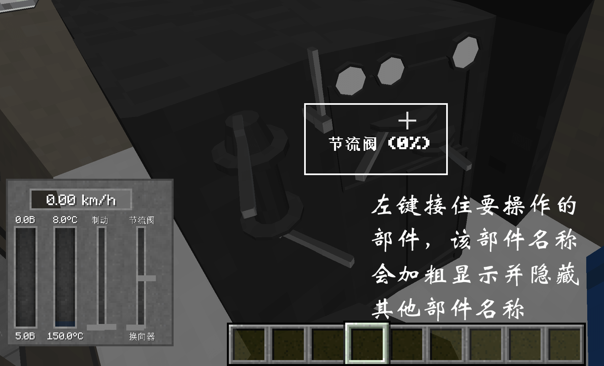
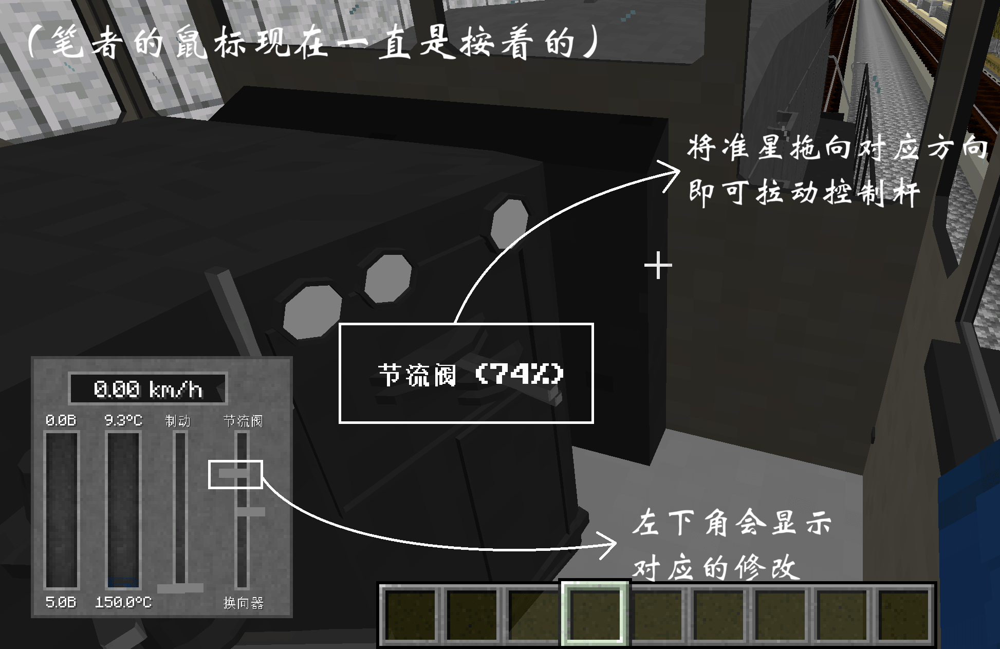
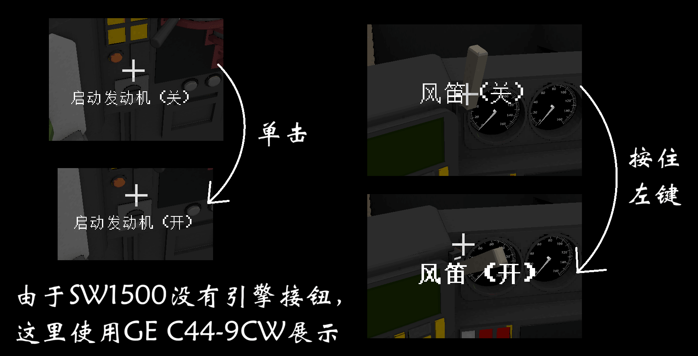
其实不用上车也能互动驾驶，在车外也可以用鼠标来操作车内的可互动部件，不过一般在车外不太容易够到可互动部件，因为离得比较远。
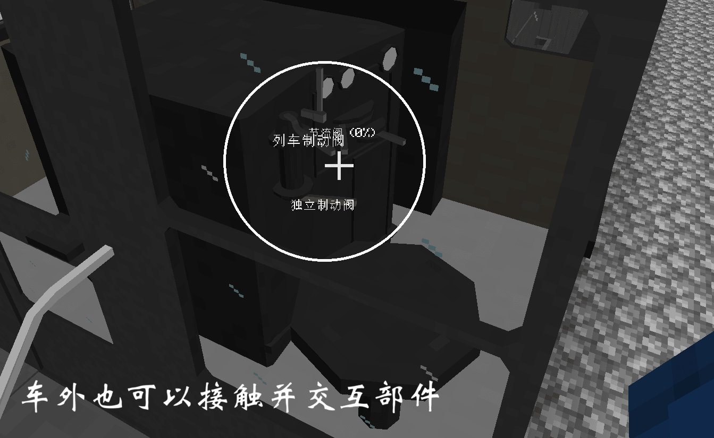
值得一提的是，IR 1.10.0版本更新的不仅仅只是机车的互动驾驶功能，而是一整套互动系统，通过这套互动系统可以做出很丰富的功能，如可以使用的机车指针仪表（能实时显示机车的时速、油量、发动机温度等），可以拖动打开并用来上下车的车门，可以阻止或允许玩家在两节车厢间移动的连接门，可以拉开的窗户和窗帘，可开关的车灯（有的第三方追加包甚至支持单独打开一侧的车灯等），可开关的雨刷器（有动画），可升起和降下的受电弓，可以坐下的座椅，等等，内容非常丰富（不过并不是全部车都支持这些功能，要看制作车辆追加包的作者愿不愿意做，IR自带的车只有这些功能中的一部分）。因此，你很有可能会在一些车上看见别的可交互部件，可以自行探索它们的功能。
在IR里，有的机车拥有多种不同的外观，你可以使用“油漆刷”来切换机车的外观。“油漆刷”可以在创造模式背包的“沉浸铁路”选项卡中找到，如下图所示。
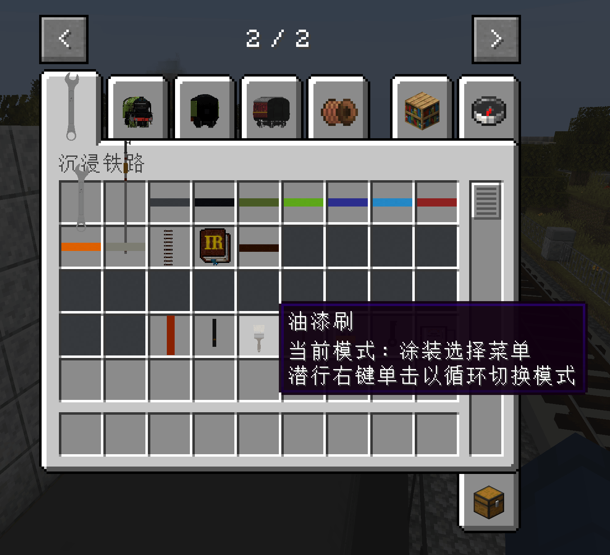
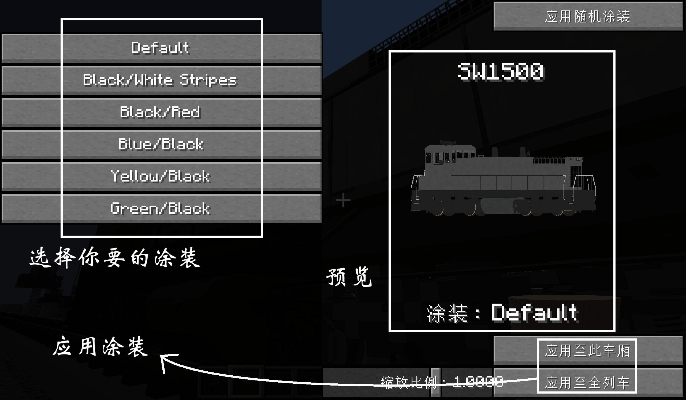
我们将机车的不同外观称为不同的“涂装”。手持油漆刷右键需要改变外观的车辆，即可打开“涂装”的选择界面，左侧可以选择你需要的涂装，右侧则会实时展示这一涂装的外观。如果你想随机选择一个涂装，可以点右上角的“应用随机涂装”按钮。
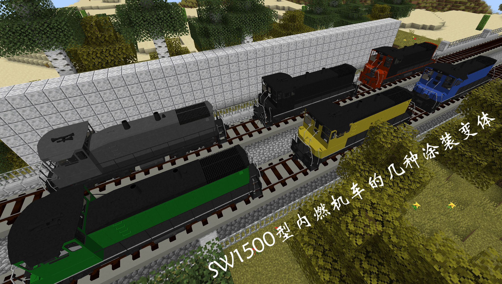
选择好对应的涂装后，点击右下角的“应用至此车厢”或者“应用至全列车”按钮保存并退出，这时就能够看见机车应用了不同的外观样式。两个保存按钮的区别是，前者只会为你选中的当前这辆机车修改样式，而后者会将你选中的这辆机车及这辆机车连着的所有相同型号的机车的样式都一并修改。
油漆刷一共有3种模式，分别为“涂装选择菜单”、“随机（仅此车厢）”、“随机（整列车）”，默认为“涂装选择菜单”模式，玩家可以通过手持油漆刷按住SHIFT键对着空气或方块右键来切换模式。前面我们所说的玩家手持油漆刷右键机车打开选择界面、手动修改涂装变体的模式即为“涂装选择菜单”模式。在“随机（仅此车厢）”模式下，玩家手持油漆刷右键机车不会打开选择界面，而会直接为当前被右键的机车随机选择一个涂装变体；“随机（整列车）”模式同“随机（仅此车厢）”模式的区别只在于“随机（整列车）”模式会修改整列车中所有相同型号机车的外观。
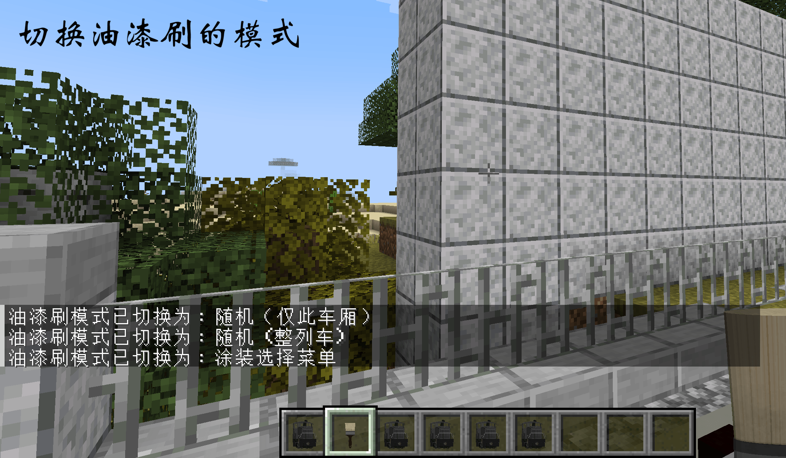
值得一提的是，油漆刷不仅可以更改机车的外观，也可以更改货车或客车等其他车辆的外观，相关操作和机车是一样的。IR自带的车辆只有一部分是有涂装的，不过一些第三方的IR追加包可能也会提供可选择的涂装。
IR的物理引擎做得比较真实，铁路车辆都是有碰撞箱的，可以对生物造成伤害或摧毁铁路线上的方块。根据笔者所做的实验，速度在10km/h以下的机车不会对生物造成伤害（无论什么轨距、什么机车都一样），速度达到或超过10km/h的机车撞到生物后会对生物造成伤害，速度越高伤害越高，如果速度过快可能会将生物直接撞死。
机车经过的道路上如果放置有方块，机车会将方块破坏（包括基岩！），破坏方块会使机车的速度减慢（不同硬度的方块减慢的速度不同，破坏得越多减速得越快）。机车破坏方块的范围取决于机车的碰撞箱，有的大车能够破坏铁轨两侧一格范围内的方块，因而在为这些大车建设铁路时要注意不要在铁轨两侧一格范围内放置方块。
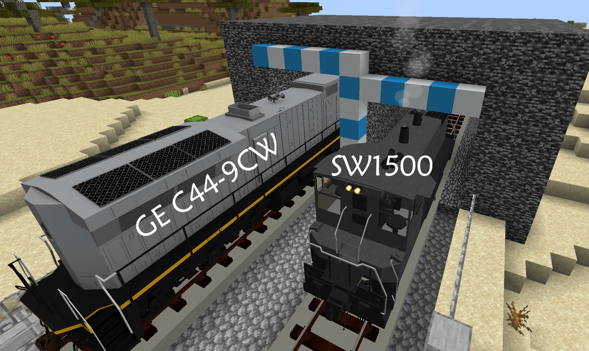
如果静止机车的碰撞箱内有方块，机车在启动后将不能行驶。如果你把机车放到铁轨上却发现车开不起来，不妨确认一下机车的碰撞箱内有没有方块（有的大车的碰撞箱是五格宽，铁轨上没有方块但铁轨旁有方块也会阻止机车行驶）。
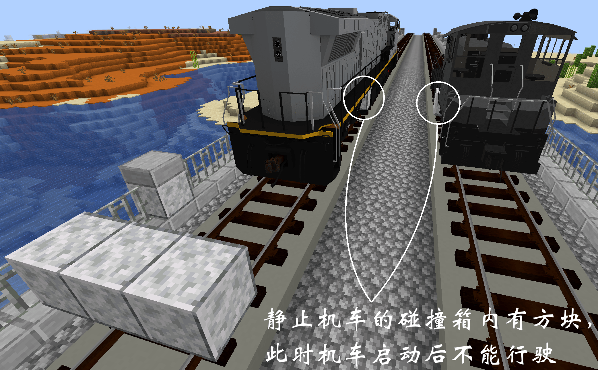
这就是本节教程的全部内容，掌握了本节的内容，你就可以独自启动、驾驶和运用各种机车了。大家一定要记得自己去MC里尝试一下如何操作，笔者在这里用文字描述难免会有些不易理解，大家亲自尝试一下很快就能弄明白了，沉浸铁路虽然比较“沉浸”、比较真实，但操作起来并不难，熟悉了后你就会觉得这一切都很简单。在下一篇教程中，我们将讨论如何连接车厢、编组车辆，以及如何建设一些铁路的配套设施（和沉浸工程联动的水塔等）。
这篇教程最早写于 2025 年，当时发在了 MC 百科和 B 站上，用的是 Minecraft 1.12.2 和 IR 1.10.0。如今 IR 已更新到 1.11.0 正式版，不但对高版本 MC 的支持更加稳定，中文翻译也完善了许多，同时还调整了一些具体机制，因而老教程的部分内容已经跟不上了。所以，笔者趁着这次机会重新修订了一番，补充了一些新内容，整理成了这篇新版教程，希望能对大家更有帮助。
本篇教程中曾经提供过一个IR 1.10.0的中文包的使用方式（CurseForge上下载到的IR 1.10.0使用的是IR 1.9.0的中文包，很多地方是残缺的），由于现在IR 1.11.0已经极大地完善了中文翻译，因而这个中文包已经没有使用的必要了，这里就不再提供了。
本篇教程使用 CC BY-NC-SA 协议，本文中的所有图片、文字和列表均为作者一人独创。
关于本教程使用的MC版本、Forge版本和模组版本等，请见第一篇教程。